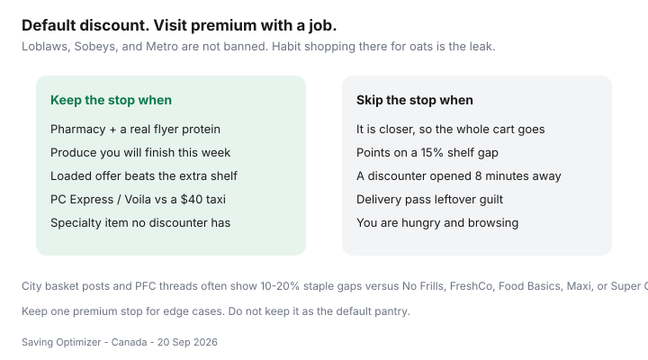

Food & Groceries · Canada
When full-service Loblaws, Sobeys, or Metro still make sense (and when they don’t)
Internet advice says “never shop Loblaws.” Then your pharmacy is inside one, the only bus stops there, and a discounter opened eight minutes away last year while the cart never moved. Habit is not a price match. Full-service Loblaws, Sobeys, and Metro (and cousins like Zehrs, Safeway, Foodland) still have jobs. They should not be the default oats store.
This is a permission framework: default discount, visit premium with a named reason. City baskets and PFC threads often show 10–20% staple gaps. We will not invent a national index. Check your till.
Disclosure: Loyalty cards and grocery delivery passes are optional offer types. Saving Optimizer may earn a commission if we later add partner links. No partnerships are claimed with Loblaw, Empire, or Metro. You can run this plan with a free loyalty app and no pass.
Key takeaways
- Default staples to No Frills, FreshCo, Food Basics, Super C, Maxi, or Walmart. Keep premium for a job.
- Jobs that still pay: pharmacy + a real flyer, produce you will finish, a loaded offer that survives the shelf gap, pickup versus a costly trip.
- Points on a 15% gap usually lose. Cheaper shelves beat richer points.
- A leftover PC Express or Voilà pass is not a personality. Do the fee math or cancel.
- Transition in four weeks, not one dramatic Sunday.
Premium banner price gap on staples
Oats, peanut butter, store-brand pasta, and frozen veg are where full-service banners quietly tax you. Meat events can look cheap because of “was/now” theatre. Compare $/kg to the discounter flyer the same week. 2026 price context — food from stores +2.8% year over year in August (Daily, 14 Sep 2026) — does not excuse a 15% location premium you chose out of habit.

Exceptions: pharmacy, specialty, quality produce
| Job | Keep the stop? | Rule |
|---|---|---|
| Pharmacy / Shoppers-adjacent errand | Yes, if combined | Do not rebuild the pantry because you needed toothpaste |
| Produce you will finish | Sometimes | A good pepper you eat beats a cheap one you bin |
| Specialty cut or diet item | Yes | One SKU, not a full cart |
| Student Metro 10% day | Yes, if verified | Calendar exception — student discounts |
| Entire weekly shop | Usually no | That is the habit we are retiring |
Loyalty offer thresholds that justify a visit
Load the offer. Subtract the shelf gap. If a $4 offer requires $22 of extras, you donated. Scene+ at Sobeys can look generous until FreshCo had the same chicken cheaper. PC Optimum at a Loblaws can look busy until No Frills had the oats. Do the net dollars — PC vs Scene+ vs Moi.
PC Express / Voilà convenience math
Pickup and delivery are time products. They win versus a taxi, a missed shift, or a $25 impulse add-on. They lose when markups plus a pass duplicate a discounter you could have walked to. Anatomy and passes: PC Express vs Voilà vs Instacart. Do not keep a premium pantry because the app icon is already on your phone.
Pass guilt: unused weeks are a fee. Either use pickup as the impulse firewall or cancel. Sunk cost is not a flyer.
Transition plan from premium to discount base
- Week 1–2: move oats, oil, canned goods, and frozen veg to the discounter. Keep milk at the convenient store if you must.
- Week 3: move flyer protein. Open Flipp on Thursday. Cook what is cheap — flyer meals.
- Week 4: compare receipts. If the bill fell and nobody revolted, make the discounter the default.
- Write one allowed premium stop (pharmacy, produce exception, student day).
- Do not also open three new credit cards this month.
Keeping one premium stop for edge cases
Permission is the point. You may still walk into a Sobeys. You may still use Metro when the 10% day is real. You may still grab Loblaws parsley if it is on the way home and you will cook it tonight. You may not keep the whole household inventory there because that is where your parents shopped. Two-store math still applies — when the extra stop pays.
Sources & date stamps
- Community pattern: r/PersonalFinanceCanada multi-store savings threads — 10–20% staple gaps vs full-service are anecdotal ranges, not a national index.
- Statistics Canada Daily, 14 Sep 2026: food from stores +2.8% year over year in August 2026.
- Loyalty and delivery mechanics as documented in our PC / Scene+ / Moi and pickup guides; verify live offers and pass prices.
Frequently asked questions
Is it always cheaper to avoid Loblaws, Sobeys, and Metro?
For staples, usually yes — city basket posts and PFC threads often show 10–20% gaps versus No Frills, FreshCo, Food Basics, Maxi, or Super C. Premium banners still win for pharmacy, a genuine flyer protein, produce you will finish, or a loaded offer that survives the shelf gap.
When do loyalty points justify a premium banner?
When you already loaded an offer and the net dollars — after the higher shelf — still beat the discounter. A 10,000-point tease on a cart that is $25 more expensive is not a win. Do the till math.
Is PC Express or Voilà worth it?
When the alternative is a $40 taxi, a missed work hour, or a hungry browse that always adds $25. Compare pass fees and markups in our delivery guide. A leftover pass is not a reason to keep the whole pantry at Loblaws.
How do I switch from a premium default to a discounter?
Move staples first for four weeks. Keep one premium stop for pharmacy or a named exception. Do not switch every SKU on day one or you will bounce back.
What if the discounter is far and the premium store is downstairs?
Proximity is a real cost. Run one monthly discounter stock-up plus the convenient store for milk. Do not pretend the elevator is a flyer.